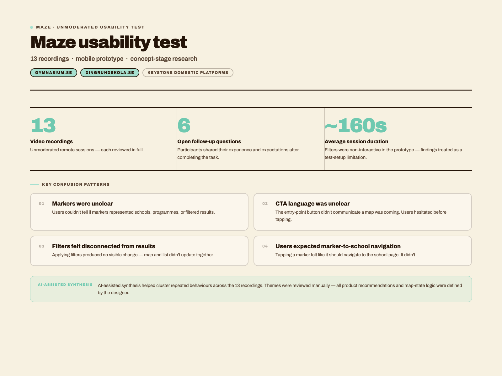

Keystone domestic platforms · gymnasium.se / dingrundskola.se
Mapping School Search.
Turning a confusing map-search prototype into clearer school discovery. This was a Keystone domestic platform concept study for location-based school discovery, especially relevant for gymnasium.se and dingrundskola.se. I tested a mobile prototype in Maze with 13 video recordings and translated the findings into clearer interaction rules, map states, and product recommendations.
A map that didn't explain what users were looking at.
The prototype aimed to show schools on a map. But nothing confirmed whether the markers represented schools, programs, or filtered results. The visual language of a map assumes shared vocabulary — and this one hadn't established any.
A mobile prototype, 13 recordings, one honest limitation.
The prototype started as a Figma canvas exploration, then I used Claude Design to turn the concept into a testable mobile prototype hosted on Netlify. After testing it in Maze with 13 unmoderated remote sessions, I used AI-assisted synthesis to help cluster repeated behaviours and confusion patterns across the recordings. I then reviewed the themes manually and translated them into product recommendations and map-state logic. Because filters were not interactive in the prototype, I treated filter-related confusion as a limitation in the test setup — not only as a product issue.

Users weren't confused about maps in general. They were confused about this map — what it was for, what it was showing, and what they could actually do with it.
Research synthesis noteFour patterns of confusion — all pointing to the same root.
Every usability issue traced back to one thing: the map had no shared vocabulary with the user. Nothing explained what was being shown, why, or what came next.
Markers were unclear
Users could not tell whether markers represented schools, programs, or search results. The ambiguity made the map feel unreliable — if you don't know what a marker means, you can't trust what you're looking at.
CTA language was too vague
The entry-point button didn't communicate what would happen next. Users hesitated — unsure whether they were about to see a filtered list or a map. The label needed to set the right expectation before the click.
Filters felt disconnected from results
Because filters were non-interactive, users couldn't confirm whether applying them would change what the map showed. The relationship between search context and displayed results was invisible.
Users expected marker-to-school navigation
Tapping a marker and going somewhere specific felt like an obvious next step — but it didn't happen. When the tap led nowhere, the map lost its purpose. Users expected markers to be destinations.
Not one map — four.
The core fix was not visual. It was logical. Different search contexts produce fundamentally different maps. Defining four distinct states gave the product team a framework for building each one correctly — and made it easier to reason about what the map should show at any moment.
Show schools offering that program in that place
The clearest, most specific state. Users have given the map enough context to be genuinely useful — show only the relevant schools.
Ask the user to choose an area first
A program alone cannot produce a map — geography is always required. Guide the user to add location context before results are shown.
Show all schools in that area
Geography is enough to start. Show every school in the area and surface a visible filter panel so users can narrow by program from within the map.
Guide the user to choose an area first
Without any context, the map cannot show anything meaningful. Lead with a clear prompt — geography is always the starting point.
Five things that would make the map work.
Each recommendation traces directly to a finding — not a preference. Together they address every layer of ambiguity the test revealed.
-
01
Rename the CTA to "Visa skolor på karta"
The current label didn't communicate that a map was coming. Renaming it sets the right expectation before the user commits to the interaction.
-
02
Markers represent schools — always
Markers should show one thing: schools. Never programs, categories, or results. When every marker means the same thing, users can build a reliable mental model and navigate with confidence.
-
03
Tap marker → navigate to school page
Users expected this behaviour without being told. If a marker exists, tapping it should go somewhere specific. Give every marker a destination — a school detail page or a bottom sheet preview.
-
04
Show active filters and result count
Users need to know what the map is currently showing. A persistent filter summary and a visible result count make the map's current state legible — and tell users when their search is too narrow or too broad.
-
05
Design all four map states as separate screens
Each state has different content, different user guidance, and a different goal. Treat them as distinct screens, not variants of one default. The four-state framework from §04 is the specification.
This project reminded me that a map is not automatically clear just because it is visual.
Users need to understand what is being shown, why it is being shown, and what they can do next. The strongest output was not a screen — it was a state logic framework that made the experience easier to reason about.
Test what the map means, not just how it looks
Before refining the UI, confirm users understand the mental model. Visual polish cannot fix conceptual confusion — it just makes the confusion harder to spot.
Prototype limitations shape findings
Non-clickable filters meant some confusion in the test was unintentional. Always document what the prototype can and can't do — it changes how findings should be read and reported.
A framework outlasts a screen
The four-state logic will serve the team long after the prototype is replaced. Systems documentation is a design output — sometimes the most durable one.
Ambiguity kills confidence.